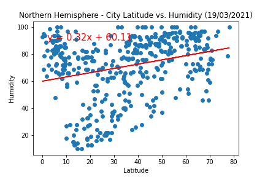
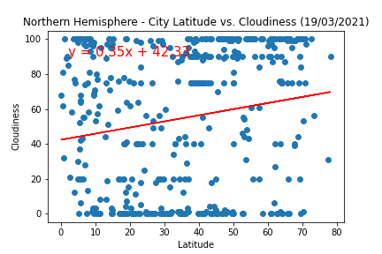

Northern Hemisphere Comparison: Latitude vs. X
Below graphs show temperature, humidity, cloudiness and wind speed for cities located in Northern Hemisphere.
vs. Max Temperature

vs. Humidity
vs. Cloudiness
vs. Wind Speed

Below graphs show temperature, humidity, cloudiness and wind speed for cities located in Northern Hemisphere.